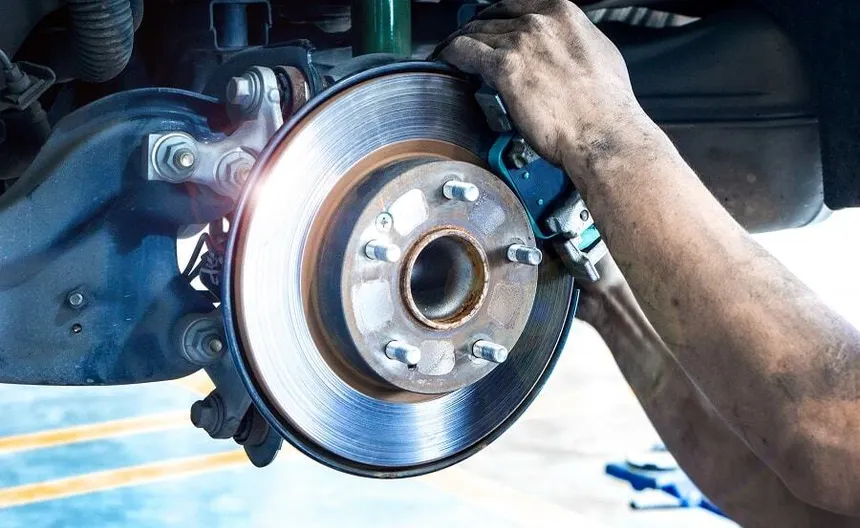

Conozca las opciones de mantenimiento y reparación disponibles para su vehículo.Siempre y cuando sea cliente

/Septiembre-2024/Qu%C3%A9-es-la-alineaci%C3%B3n-y-balanceo/importancia-de-la-alineacion-y-balanceo.png?width=600&height=343&name=importancia-de-la-alineacion-y-balanceo.png)